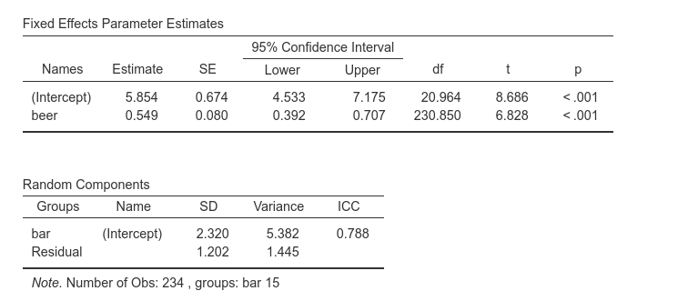
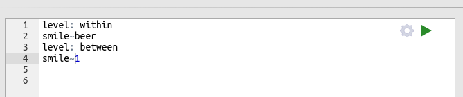
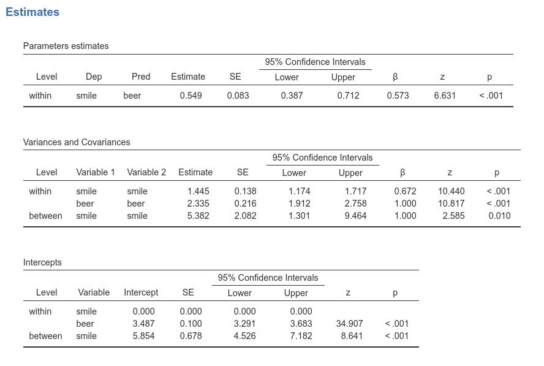
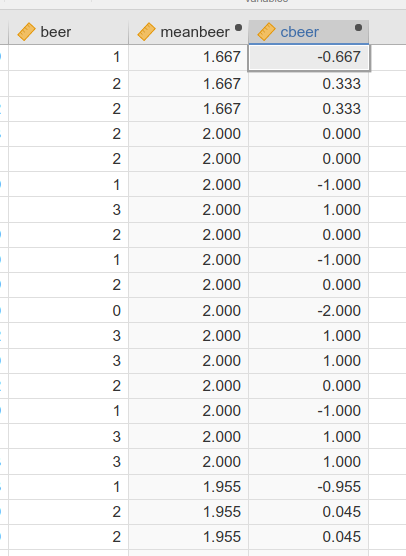
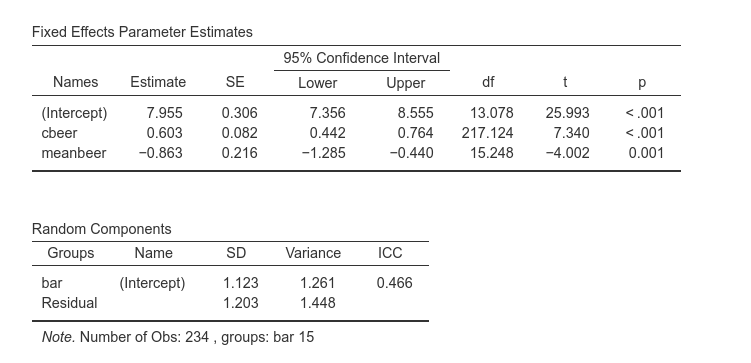
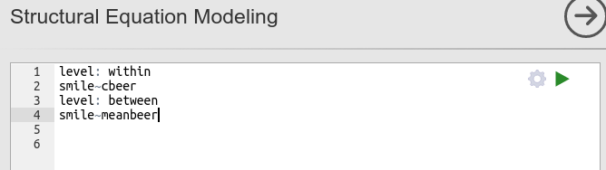
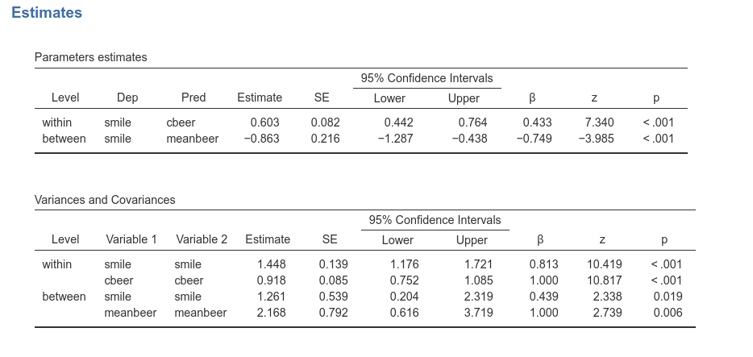
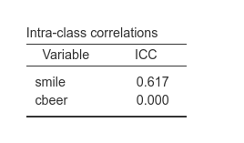
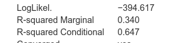
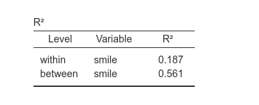

Mixed models vs multilevel SEM
keywords multilevel, path analysis, lavaan, lme4, jamovi, semlj, gamlj
Draft version, mistakes may be around
In this page we show how SEMLj (and
thus R packagelavaan) and GAMLj jamovi module (and thus R
package lme4) can be led to produce the same mixed model,
and thus the same results. We choose a very simple model that can be
estimated with all packages and thus the results can be compared.
Research data
For this example we use a simple simulated dataset available from jamovi GAMLj help page, that can be dwonloaded here
Mixed model
The data simulate an hypothetical study in which the number of beers and number of smiles are measured in a sample of bar customers. We immagine we sampled a number of bars (15 in this example) in a city, and in each bar we measured how many beers customers consumed that evening and how many smiles they were producing for a give time unit (say every minute). The aim of the analysis is to estimate the relationship between number of beers and number of smiles, expecting a positive relationship.
We want to estimate the fixed effect of beer on
smile, allowing random intercepts and random slopes across
bars, see GAMLj
help page for details. GAMLj uses lmer() function to
estimate the mixed model, so we know where the results come from.
Module
We need to use SEMLj syntax submodule, which allows for multilevel models.
Simple mixed regression
Mixed Model
We start with the simplest mixed model: smile is the
dependent variable, beer the independent variable, bar
is the clustering variable, and we set the intercept as the random
coefficient across bar. This corresponds to the
lmer() model: smile~1+beer+(1|bar). For the
sake of comparison, in GAMLj we set the estimator equal to
ML and the independent variable beer scaled as
none, so no transformation is done on the variable
values.
Results are the following:

We want to highlight the fixed effect intercept (5.854), the slope (0.549) and its standard error (0.080), and the variance of the intercepts (5.382), with corresponding ICC=.788.
Multilevel path analysis
We know estimate the same model with SEMLj, thus using R lavaan
package. The syntax is the following:

What we are saying to the software is to estimate a two levels model, in which at the within model (i.e. the participants level) beer predicts smile, whereas at the between level (i.e. the bars level), we estimate only the intercept. In this way, the whole effect of beer on smile is captured by the first level, like in the standard mixed model estimated above. Results are:

We can appreciate that the effect of beer on smile
is indeed 0.549. The intercept can be found in the
Intercept table, in the row between smile,
meaning the fixed intercept, equal to 5.845, as in the LMM.
The variance of the intercepts can be found in the
Variances and Covariances table, at the
between smile smile row. It is 5.382, as in the mixed
model. In the multilevel SEM, you find the variance of the intercepts in
this row because it is the variance of smile means across bars,
conditioned to beer=0, which is indeed the variance of the
intercepts.
Centering within cluster
People often like to center their level 1 variables and include cluster means as an additional predictor. This help disentangling the within cluster effect and the between clusters effects.
This means that our independent variable beer should be represented in the data with two variables. A cluster-centered version (cbeer) and a variabile which features the mean of the cluster the participant belongs to (meanbeer).
Here you can see the first rows of the data in which these new variables have been computed. The first three rows are participants from the same bar, so they share the same meanbeer (1.667) and their cbeer is the deviation beer-meanbeer. the same goes for the other participants.

Mixed Model
We simply need to set cbeer and meanbeer as independent variables, and leave the intercept as random coefficient. GAMLj results are the following:

The within bars effect of beer is now 0.603, and the between bars effect is -.863. This means that if bar had not effect, for one more beer drunken, smiles would increase of .603 units, whereas bars that are one unit apart in the average number of beers, would show .863 average smiles less. We can also notice that the variance of the intercepts is now 1.261.
Multilevel path analysis
To obtain the same results of the mixed model, we need to issue the following lavaan syntax:

The syntax is straightforward: At the participants level, the cluster-centered variable predicts the dependent variable, at the bar level (between), the bar mean of beers predicts the mean of smiling. Results, again, are the same as in the mixed model.

As expected, the regression coefficients are the same as in the mixed
model, and the variance of the intercept (found in
Variances and Covariances table, row
between smile smile) is indeed 1.261.
What does not match
Parameters estimates are the same in the mixed model and the multilevel path analysis. A few indexes do not match. The first one is the ICC (intra-class correlation). In the last example, the mixed model gives a \(ICC=.466\), whereas the multilevel path analysis gives:

The reason of this discrepancy is that in the mixed model, the ICC is
computed as \(\sigma_I^2/(\sigma_I^2+\sigma^2)\), where
\(\sigma_I^2\) is the variance of the
intercepts and \(\sigma^2\) is the
residual variance. lavaan uses a different definition of
the variances involved in the ICC computation. If one wants to extract
the mixed model ICC from the multilevel path analysis output, one can
simply compute:
variance of smile between /(variance of smile between + variance of smile within).
In our case: \(1.261/(1.261+1.448)=.465\), as in the mixed
model.
The other index that appears to be different in the mixed model and the multilevel SEM is the \(R^2\). GAMLj computes two \(R^2\):

The marginal R-squared is the variance explained by the fixed effects over the total variance, the conditional one is the variance explained by the whole model (fixed and random effects).
The multilevel SEM computes two R-squared indexes (for endogenous variable). One for the within level, one for the between level.

For a very simple model like the ones we are analyzing, the \(R2\) corresponds to the squared of the standardized regression coefficient, \(R_w^2=.433^2=.187\) and \(R_b^2=-.749^2=.561\).
Examples
Some worked out practical examples can be found here
Examples
Some worked out practical examples can be found here
Comments?
Got comments, issues or spotted a bug? Please open an issue on SEMLj at github or send me an email